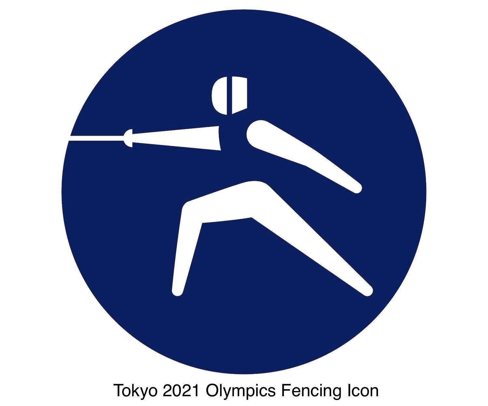

There are several fencing tournaments held in different places in the world every year. This webpage will introduce you some of the major tournaments in North America and the world.
CFF National Championships are usually held three times a year in major cities in Canada. Every fencer that is registered as a CFF member can participate in the competition. The most recent tournamnet was held in Montréal, QC, from Dec 3 to Dec 5.
There are many tournaments held in USA every year.
(1) North American Cups (NACs) are organized 6 times a year, in October, November, December, January, March and April. For convenience, NACs are identified by and referred to by the month they are held in. There are no classifications for participating the competition, except for Division 1 fencing (which is only for the top fencers in USA).
(2) Summer Nations is a fencing championship tournament for youth fencing (Y10, Y12, Y14), Division 1A (tops fencers in Division 1),2,3 and veterans. Only the top 40% finishers in NACs can participate this competition.
(3) Divsion 1 Championships is the tournament to dicide which fencers can represent America and participate in World Fencing Championships and Olympic Fencing Games.
The World Fencing Championships is an annual competition in fencing organized by the Fédération Internationale d'Escrime or FIE, (International Fencing Federation in English). The world championships are the most prominent international competition in the sport of fencing. Fencers (qualified by his or her country) may participate in foil, épée, and sabre events, they are held in different places and time.

Fencing is one of the oldest sports in Summer Olympic Games, it is the highest stage of fencing. Six events of foil Individual, épée Individual, sabre Individual and foil team, épée team, sabre team. (Team fencing is every fencer on a team fences every other fencer on the other team in a game to five, the first team that gets to 45 points takes the victory)
